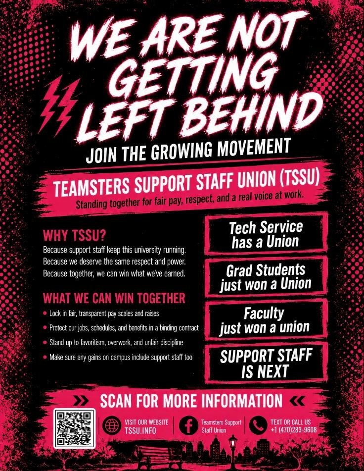

Print & Post
Help spread the word where you actually work. Download the flyer, print a few copies, and put them up in break rooms, on bulletin boards, and anywhere coworkers will see them. Every flyer posted is one more person who learns this effort includes them.

Download flyer (PDF)